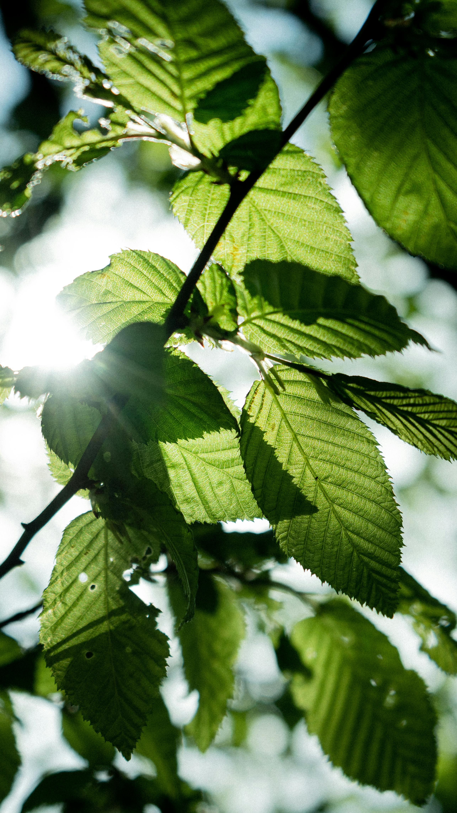

Main Content Goes Here
Eating healthy in modern age and time
If you were wondering about how to start eating healthy and feel good, you've come to the right place. On this website I am going to share my experience and knowledge about what to include in your diet and how to start choosing the right products and recipies for yourself. Let's begin.
Your diet should largely depend on your location. I've been to Thailand and there it is really easy to maintaint fruit diet by eating relatively cheap local produce, such as mango, coconuts and bananas. Lots of sun and good weather, water nearby really makes this place seem like a paradise. Right now I am in more northern climate and here instead of mango I eat lots of apples, carrots and occasionally avocados from a local supermarket. As for my diet, I don't eat any meat or dairy, but do eat lots of fruit, vegetables and pasta, grain products. I'll list some of my favourites here and the corresponding recipies/combinations.
Secondary Content Goes Here
List of the products I like, find useful, based on category
Fruits
Apples, bananas, pears, mangoes, coconuts, peaches, nectarines, and others.
Vegetables
Carrots, cucumbers, tomatoes(roma and cherry), sweet bell peppers
Bread and pastry
Bread, baguette, cakes(such as black forest cake), cookies, chocolates (dark)
Canned stuff
Tomato sauce(regular or flavoured), canned beans(cannellini), canned veggies(corn, peas, etc.)
Other, processed food
Hummus, dried fruit (apricots, figues), nuts